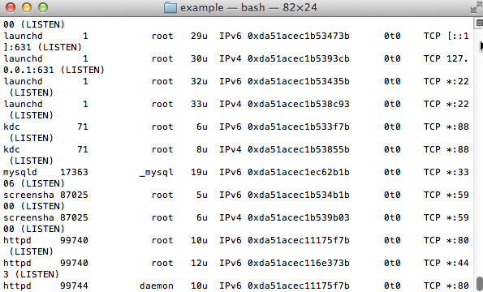

Troubleshoot Apache Startup Problems
Are you having difficulty getting your Apache server started? Here is a list of common problems and their solutions.
| The information in this document is based on this ApacheFriends community forum thread. |
Another Web Server Daemon is Already Running
XAMPP displays a message like:
Another web server daemon is already running.
To solve this problem, follow these steps:
-
Open a new terminal window.
-
Use the lsof command to identify which other service is currently using port 80 and/or 443.
sudo lsof -i -n -P | grep TCP | grep LISTEN

-
Terminate services currently using those ports.
You should now be able to start Apache successfully.
| If the problem persists even after performing these steps, refer to this source thread and this forum post for alternative solutions. |